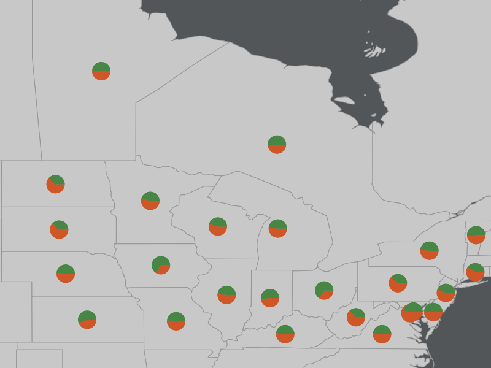

Dynamic Charting¶
- Author:
Thomas Bonfort
- Contact:
thomas.bonfort at gmail.com
- Author:
Jeff McKenna
- Contact:
jmckenna at gatewaygeomatics.com
- Last Updated:
2021-04-15
Starting with version 5.0, MapServer includes the ability to automatically draw pie or bar graphs whose values are taken and adjusted from attributes of a datasource.
This document assumes that you are already familiar with MapServer application development and especially setting up mapfiles. You can also check out the Vector Data Access Guide, which has lots of examples of how to access specific data sources.
Setup¶
Supported Renderers¶
Dynamic charts are supported through the AGG renderer (for PNG output) and Cairo renderer (for PDF & SVG output) for MapServer 7 and more recent versions, as the GD renderer was removed in the MapServer 7.0 release; MapServer versions 5 and 6 support the GD and AGG renderers for dynamic charting.
Attempting to add a chart layer with an unsupported renderer will result in undefined behavior. Rendering quality with the GD renderer (if you are using MapServer 5 or 6) is less than optimal, especially with small graphs, due to the lack of subpixel rendering functions.
Output from AGG and GD Renderers¶
MapServer AGG Rendering

MapServer GD Rendering

Adding a Chart Layer to a Mapfile¶
Layer Type¶
A new type of layer has been added to the mapfile syntax. To specify a chart layer, use
LAYER
...
TYPE CHART
...
END
No other specific keywords have been added in order to keep the number of different keywords to a minimum in the mapfile syntax, therefore all the chart specific configuration is determined by PROCESSING directives.
Specifying the Size of each Chart¶
The size of each chart is specified by the CHART_SIZE directive. If two values are given for this parameter, this will specify the width and height of each chart (this only applies for bar graphs). By default, the charts are 20x20 pixels.
LAYER
TYPE CHART
PROCESSING "CHART_SIZE=21" # specify size of the chart for pie or bar graphs
#PROCESSING "CHART_SIZE=20 10" # specify width and height for bar graphs
...
END
The diameter of a pie chart can be bound to an attribute,using the CHART_SIZE_RANGE PROCESSING attribute:
PROCESSING "CHART_SIZE_RANGE = itemname minsize maxsize minval maxval exponent"
or just
PROCESSING "CHART_SIZE_RANGE = itemname"
where:
itemname is the name of the attribute that drives the chart size (e.g. total_sales)
minsize and maxsize are the minimum and maximum chart size values in pixels (e.g. “10 100”)
minval and maxval are the minimum values of the attribute that correspond to chart sizes of minsize and maxsize (e.g. 10000 1000000).
exponent (optional) applies an exponential factor to the diameter, calculated with:
diameter=mindiameter + pow((attribute_value-minvalue)/(maxvalue-minvalue),1.0/exponent)* (maxdiameter-mindiameter);
If the attribute value is smaller than ‘minval’ then the chart size will be minsize pixels, and if the attribute value is larger than maxval, the chart size will be maxsize pixels.
Specifying the Values to be Plotted¶
Each value to be plotted (i.e. a slice in a pie chart, or a bar in a par graph) is specified in a CLASS of the chart layer. The value to be plotted is taken from the SIZE keyword from the first STYLE block of the class. This is semantically a bit awkward, but keeps the number of different keywords to a minimum in the mapfile syntax. The value given to the SIZE keyword could of course be given a static value, but dynamic charting really only makes sense with attribute binding.
LAYER
...
CLASS
# include a NAME keyword if you want this class to be included
# in the legend
NAME "value 1"
STYLE
# specify which value from the data source will be used as the
# value for the graph
SIZE [attribute]
...
END
END
CLASS
...
END
...
END
At least 2 CLASS blocks must be specified before charting can occur (but you already knew this if you want your charts to convey at least some information).
Specifying Style¶
The styling of each value in the charts is specified by the usual MapServer syntax. Only one style per class is supported, any other STYLE block will be silently ignored. Only a subset of the styling keywords are supported:
STYLE
SIZE [attribute]
# specify the fill color
COLOR r g b
# if present will draw an outline around the corresponding bar or slice
OUTLINECOLOR r g b
#specify the width of the outline if OUTLINECOLOR is present (defaults to 1)
WIDTH w
# only for pie charts. 'a' is the number of pixels the corresponding
# slice will be offset relative to the center of the pie. This is useful
# for emphasizing a specific value in each chart. 'b' is required by the
# mapfile parser but is ignored.
OFFSET a b
END
Pie Charts¶
This is the default type of chart that is rendered. This can also be specifically set with a PROCESSING keyword in the layer attributes:
PROCESSING "CHART_TYPE=PIE"
For each shape in the layer’s datasource, the STYLE SIZE is used to set the relative size (value) of each pie slice, with the angles of the slices that are automatically computed so as to form a full pie. For example:
1LAYER
2 NAME "Ages"
3 TYPE CHART
4 CONNECTIONTYPE postgis
5 CONNECTION "blabla"
6 DATA "the_geom from demo"
7 PROCESSING "CHART_TYPE=pie"
8 PROCESSING "CHART_SIZE=30"
9 STATUS ON
10 CLASS
11 NAME "Population Age 0-19"
12 STYLE
13 SIZE [v1006]
14 COLOR 255 244 237
15 END
16 END
17 CLASS
18 NAME "Population Age 20-39"
19 STYLE
20 SIZE [v1007]
21 COLOR 255 217 191
22 END
23 END
24 CLASS
25 NAME "Population Age 40-59"
26 STYLE
27 SIZE [v1008]
28 COLOR 255 186 140
29 END
30 END
31END
In the example above, if for a given shape we have v1006=1000, v1007=600 and v1008=400 then the actual pie slices for each class will be respectively 50%, 30% and 20% of the total pie size.
Pie Chart Expressions¶
Expressions can be used within a CLASS to generate a pie chart for a layer. This is best explained through an example. Let’s say we have 3 polygons, with the following crop type attributes:
ID |
NAME |
TYPE |
|---|---|---|
1 |
polygon1 |
corn,rice |
2 |
polygon2 |
wheat |
3 |
polygon3 |
rice,corn,wheat |
We can use an expression to give a specific color for each crop type, such as:
LAYER
NAME "pie-charts"
TYPE CHART
STATUS ON
DATA "croptype.shp"
PROCESSING "ITEMS=TYPE"
PROCESSING "CHART_TYPE=pie"
PROCESSING "CHART_SIZE=70"
CLASSITEM "TYPE"
CLASS
NAME "corn"
EXPRESSION /(^|,)corn($|,)/
STYLE
SIZE 1
COLOR 255 0 0
END
END
CLASS
NAME "wheat"
EXPRESSION /(^|,)wheat($|,)/
STYLE
SIZE 1
COLOR 0 255 0
END
END
CLASS
NAME "rice"
EXPRESSION /(^|,)rice($|,)/
STYLE
SIZE 1
COLOR 0 0 255
END
END
END # layer

More examples of working mapfiles with expressions can be found within the msautotest suite.
Note
The size of the pie chart is actually set by: PROCESSING “CHART_SIZE=70”, not through the STYLE within the CLASS.
Bar Graphs¶
Bar graph drawing is set with a PROCESSING keyword in the layer attributes:
PROCESSING "CHART_TYPE=BAR"
For each shape in the layer’s datasource, the STYLE SIZE is used to set the relative size (value) of each bar in the graph. By default, the vertical axis of each bar graph is scaled for the values of the corresponding shape, and will always include the origin (=0). For example
a shape whose STYLE SIZEs contains values {5,8,10,3} will be plotted on a graph whose vertical axis spans 0 to 10.
a shape whose STYLE SIZEs contains values {-5,-8,-10,-3} will be plotted on a graph whose vertical axis spans -10 to 0.
a shape whose STYLE SIZEs contains values {-5,-8,10,3} will be plotted on a graph whose vertical axis spans -8 to 10.
Additional PROCESSING directives are used to optionally specify the bounds of vertical axes so that the graphs for all the shapes can be plotted with the same scale:
PROCESSING "CHART_BAR_MINVAL=val"
PROCESSING "CHART_BAR_MAXVAL=val"
Values in the datasource that are above CHART_BAR_MAXVAL or below CHART_BAR_MINVAL will be clipped respectively to these values. If only one of these directives is included, the other will be automatically adjusted for each shape to include at least the origin, i.e. the graphs for all the shapes will be in the same scale only if all the values are of the same sign (positive or negative).
Stacked bar Graphs¶
Stacked bar graphs can be drawn using:
PROCESSING "CHART_TYPE=VBAR"